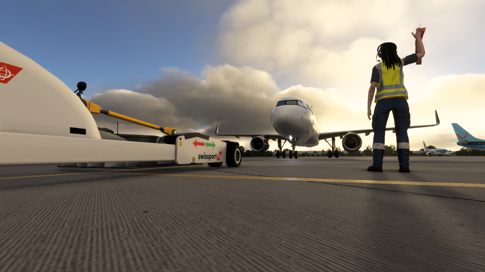

Professional Operations
Fly realistic schedules using our modern Airbus fleet while following procedures designed to create an authentic airline experience.

JOIN BRITISH MIDLAND
More than a virtual airline. A welcoming community built around realism, professionalism and a shared passion for flight simulation.
OUR COMMUNITY
British Midland Virtual is built on professionalism, respect and a genuine passion for aviation. Whether you're new to virtual airlines or an experienced pilot, you'll find a welcoming community committed to delivering an enjoyable and realistic flying experience.
Fly realistic schedules using our modern Airbus fleet while following procedures designed to create an authentic airline experience.
We foster a mature, friendly environment where every member is welcomed, supported and treated with respect regardless of experience.
Join organised group flights, community events and regular discussions with fellow aviation enthusiasts from around the world.
British Midland Virtual continues to grow through new destinations, improved operations and ongoing community development.
YOUR JOURNEY
Joining British Midland Virtual is simple. Follow these four steps and you'll be ready to begin your first flight from Birmingham.
Become part of the community, introduce yourself and meet fellow members.
Familiarise yourself with our procedures, standards and expectations before your first flight.
Download our liveries and supporting resources so you're ready to represent British Midland.
Choose your first route, depart from Birmingham and begin your journey with British Midland Virtual.
FIND YOUR PLACE
Whether you're taking your very first virtual flight or have thousands of hours in the simulator, there's a place for you at British Midland Virtual.
Starting your first virtual airline journey? Our friendly community is here to help you learn, build confidence and enjoy every flight from day one.
Looking for structured Airbus operations, realistic procedures and a professional community? You'll feel right at home with British Midland Virtual.
Whether you enjoy relaxed evening flights, organised group events or simply chatting with fellow enthusiasts, you'll always find someone ready to fly alongside you.
OUR VALUES
British Midland Virtual is built on professionalism, maturity and mutual respect. These principles help create the welcoming atmosphere that defines our community.
Treat every member with courtesy, professionalism and respect.
Help fellow pilots and remember everyone starts somewhere.
Represent British Midland proudly whenever you fly under our callsign.
Use the correct Discord channels to keep information easy to find.
Respect personal information and the privacy of every member.
Help us maintain a friendly, welcoming environment free from spam and offensive content.
MEMBERSHIP
Joining British Midland Virtual is straightforward. We ask every member to meet a small number of requirements to help maintain the friendly, mature and professional community we're proud of.
18 Years or Older
English in Public Channels
Microsoft Flight Simulator 2024
Required
Friendly • Respectful • Professional
YOUR NEXT FLIGHT STARTS HERE
Whether you're taking your very first virtual flight or bringing years of experience, there's a place for you at British Midland Virtual.